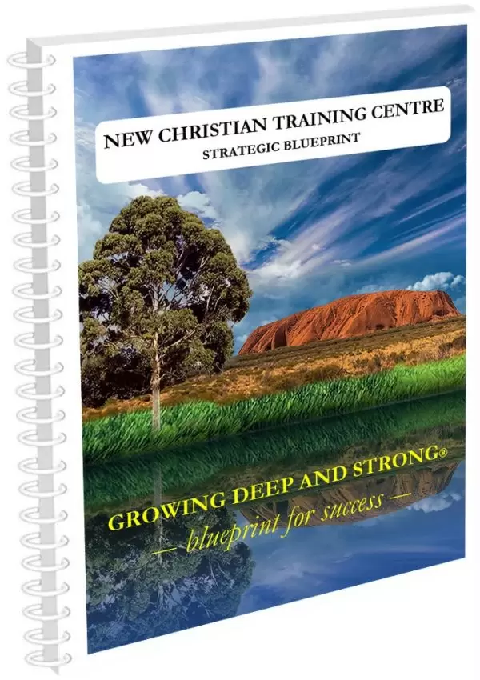

An intentional pathway
Growing Deep and Strong®
An intentional Christian discipleship and servant leadership pathway for new and maturing believers.
The Growing Deep and Strong® Series helps you fast track and transform the life of a new Christian through a clear, biblical, and easy-to-use discipleship framework.
"Go therefore and make disciples of all the nations, teaching them to observe all things that I have commanded you."
— Matt 28:19–20

Global Reach
We Ship Worldwide
Our manuals, curriculum, and resources are dispatched to disciples, coaches, and training hubs across every continent.
Visit the ShopThe Coach's Manual Made It Easy to Coach Others
"It was a learning curve, interesting to see the dynamics at work. We had a small group of people we were responsible for. We each had 3–5 people to coach. The manuals are fantastic. They outlined and gave direction on what to speak about, what questions to bring up and discuss, and gave us guidelines."
Strategic Vision
7 Mountain Mandate
Our 7 Mountain Mandate is to equip the Ecclesia in the Mountain of Religion with a Blueprint for Success so they can transfer, disciple, strengthen, and send biblically grounded societal reformers back into their mountain of influence.
Their lifestyle is influenced by a biblical worldview, and the Bible is their standard and code of conduct for every decision they make in business, workplace, schools, universities, and personal life.
It has been designed to help you take a brand new follower of Jesus Christ to a servant leader discipling others in their mountain of influence in 12 months or less.
- 01Religion
- 02Family
- 03Education
- 04Government
- 05Media
- 06Business
- 07Arts & Entertainment
Ready to use, off the shelf
It's All Done for You
If you have a burning desire to disciple others, this is for you. We have made it easy to use and simple to teach.
We have given you the Bible verses, commentaries, and clear instructions in the Coach's Manual that you need to disciple a new Christian.
It is biblically sound and designed to empower ordinary Christians who have a desire to teach new believers how to live a transformed life according to God's Word.
We collectively spent over 35,000 hours to give you a complete, off-the-shelf Christian Bible study discipleship and leadership course that you can purchase and implement.
Testimony
It Fast Tracked My Christian Journey to Righteousness
"Aside from a short spell at Sunday School as a child, I had no religious upbringing or teachings whatsoever. Despite a university education, my understanding of the Bible was as Mickey Mouse as it gets."
"Joining a Bible Study group with other new believers and studying under the Growing Deep and Strong Series was a wonderful introduction to Scripture. What was once unintelligible became clear and powerful."

Free Download
New Christian Training Centre Strategic Blueprint
A practical pathway for discipleship, leadership multiplication, and Kingdom influence.
The Growing Deep and Strong® New Christian Training Centre Strategic Blueprint has been developed to help believers establish clear discipleship pathways, multiply leaders, and participate in a generational movement that influences communities, institutions, and nations for Christ.
This free resource outlines how ordinary believers can help disciple others, raise leaders, and build a simple, reproducible structure for training centres.
- Discover the vision behind New Christian Training Centres
- Understand the pathway from discipleship to multiplication
- Learn how this model can function in homes, workplaces, churches, and community settings
From Pagan Background to Societal Reformer
Christian Discipleship for New Christians
Growing Deep and Strong® will take a person from a pagan background to a Christian servant leader in 12 months or less.
The Growing Deep and Strong® Series is about changing and transforming the lives of people from the inside out.
It's Easy to Teach
If you have previous leadership and management skills or have completed the Series as a disciple, then you can easily take others through Growing Deep and Strong® by following the steps written into the Coach's Manuals.
19 or 37-week program
Growing Deep and Strong®
Growing Deep and Strong® is a 19-week or 37-week off-the-shelf mentoring Christian discipleship and leadership program that will grow a non-Christian into a mature Christian servant leader.
- Grounded in God's Word
- Strong in faith
- Living a holy and sanctified life
- Dedicated to discipling others
- Simple to use
- Easy to administrate
- Low in cost
- Builds servant leadership training blocks that will grow
- Multiplies organically
Built with intention
Designed as an Intentional Christian Discipleship Path
For new and maturing believers
Its unique style is written in an easy-to-understand format to quickly establish new Christians in their faith with minimal supervision.
The Growing Deep and Strong® Series consists of an evangelism video and four nine-week modules, including two Encounter Weekends.
The purpose of the four modules is to help you establish a new believer quickly with strong biblical foundations, free them from bondages they may bring into their Christian walk, teach them how to reach out to people they know, and then equip them to be a Coach and disciple new Christians.
There are two manuals for each module: one for the disciples and one for the coach.
The Coach's Manual has the complete presentation, filled-in answers, and questions for review and group discussion at the end of the session.
Watch & Learn
Why do BAD THINGS happen on Earth?
It seems that there are invisible forces or influences at work behind the scenes.
Find out why →"Why do BAD THINGS happen on Earth?"
In closing
Simple to Teach. Easy to Use. Built to Multiply.
The Growing Deep and Strong® Series has been tailored to suit different groups and can be used one-on-one, in servant leadership settings, or as a class in any location or time frame.
- It is simple to teach
- It is easy to administrate
- It multiplies groups with minimal supervision
- It involves ordinary Christians
Explore